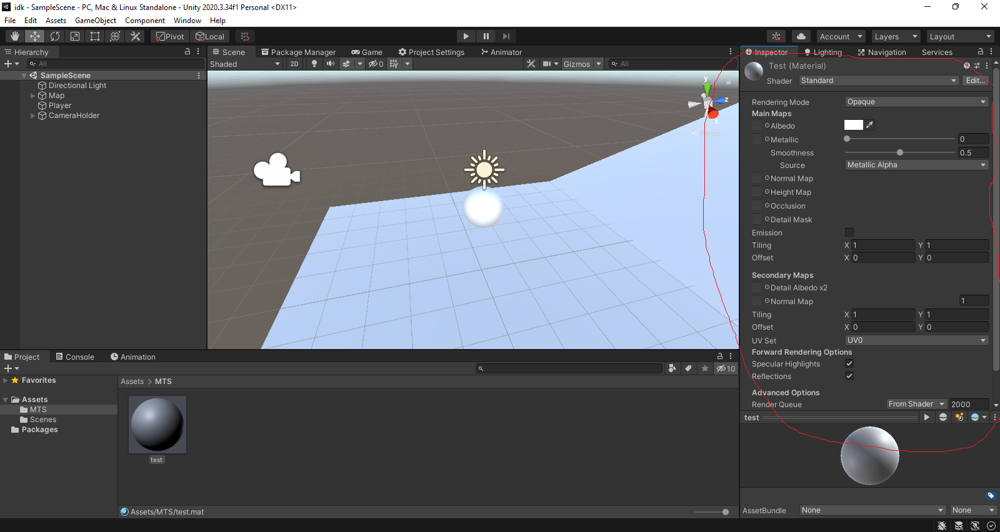
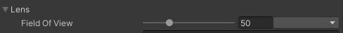
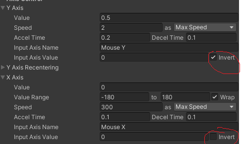
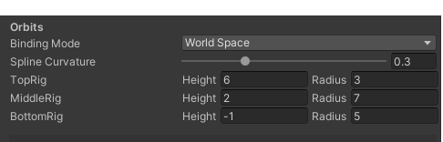

V tem vodiču se boste naučili kako se oblikuje v unity
Prvo bomo dodali novo mapo
Nato dodamo novi "Material"
Nato bomo videli to:
Za začetek bomo dodali samo eno barvo v eden mterjal
Nato bomo obarvali "plane"
Sedaj pa malo težji del naložimo paket z imenom "cinemachine" zato pazljivo glej video:
Nato dodamo Kamero ki je že narjena:
Nato moramo izbolniti vebs:
Sedaj pa uprabite te namestitve za kamero:
  